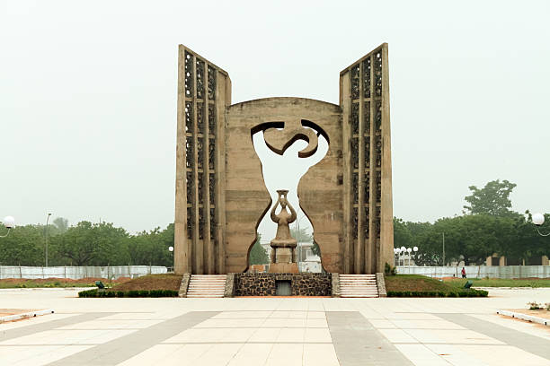
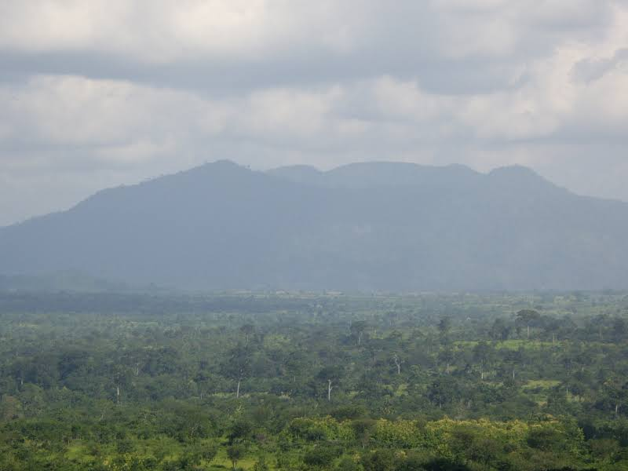

Le TOGO


Description
Le Togo, en forme longue la République togolaise, est un État souverain d’Afrique de l'Ouest, dont la population est estimée en 2020 à environ 8,6 millions d’habitants pour une densité de 152 hab./km2. Parmi les plus petits
États africains continentaux4, le Togo couvre 56 785 km2 , s’étirant sur environ 700 km du nord au sud avec une largeur n’excédant pas 150 km, limité au nord par le Burkina Faso, au sud par le golfe de Guinée, à l'est par le
Bénin et à l'ouest par le Ghana. Le Togo présente une grande diversité de paysages : une côte de sable bordée de cocotiers au sud, des collines, des vallées verdoyantes et des petites montagnes dans le centre du pays, des plaines arides
et de grandes savanes plantées de baobabs au nord du pays. Le Togo fait partie de la Communauté économique des États de l'Afrique de l'Ouest (CEDEAO) depuis 1975, de l'UEMOA depuis 1946 et est un pays membre de l'Organisation de la coopération
islamique.
Places à visiter(avec lien vers google maps)
-
Koutammakou, the Land of the
Batammariba.................................................................Visiter
-
Le marché des
féticheurs....................................................................................................Visiter
-
Le mont
Agou......................................................................................................................Visiter
Annecdotes
- ‹‹ On ne pleure pas le caméléon après avoir mis le feu à la forêt. ››
- ‹‹ Là où le coeur est, les pieds n'hésitent pas à y aller. ››
- ‹‹ On ne peut plus avaler la salive qu'on a crachée. ››